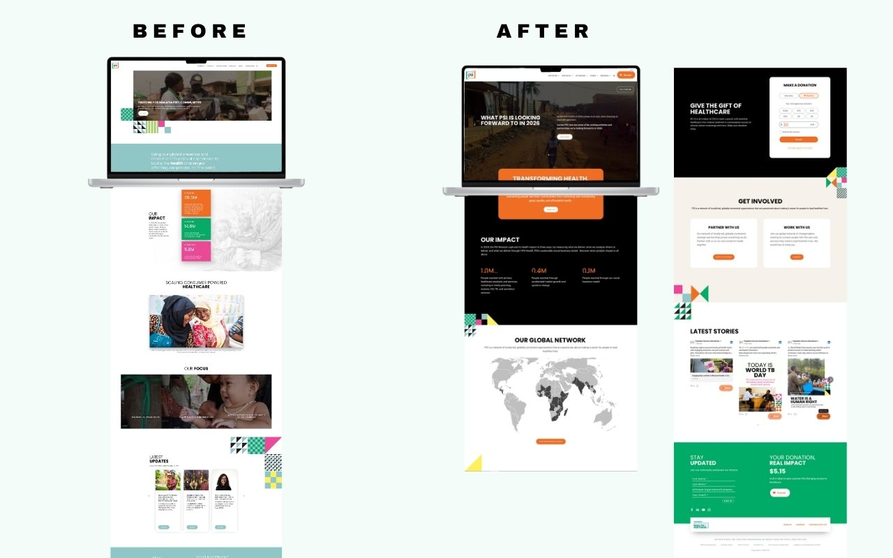

The problem
A homepage has one job: tell the right person what they need to know in the first ten seconds. PSI's old homepage was doing that for no one. It had accumulated decisions over years without a coherent strategy behind them. A rotating image carousel buried the lede. Impact numbers, PSI's most compelling proof points, were small, mid-page, and visually cluttered. The "Our Focus" section used vague labels over dark photography that communicated almost nothing to someone unfamiliar with PSI's work. There was no global network visualization, no clear path for donors, and no meaningful distinction between what a partner, a donor, or a job seeker should do next.
Behavioral data from Microsoft Clarity confirmed what the design made obvious: users were not scrolling past the fold in meaningful numbers. The page wasn't earning attention; it was losing it.

My role
I led the redesign from audit through implementation: using behavioral data to diagnose the existing page, presenting multiple concepts to leadership before landing on a direction, and building the final designs in Figma before implementing in WordPress. I maintained a live annotation layer in Figma throughout, documenting design decisions, open questions, and rationale as they evolved, so stakeholders could follow the thinking, not just see the output.
Design decisions
The hero was the first and most consequential decision. The carousel had to go; it diffuses attention and signals that no single message is important enough to hold the screen. I replaced it with a video background and a single editorial headline tied to a specific, timely news peg. This gave the page a reason to exist on any given visit, not just a permanent mission statement.
The impact numbers moved up and out. Three clean figures (44.1M, 23.6M, 5.6M) with grow animations borrowed from the annual report's visual language, each with a single sentence explaining what the number actually measures. What had been buried in color blocks became the page's second beat.
The global network map, which I had already designed and shipped as a standalone product, was integrated directly into the homepage as the "Our Global Network" section. This was a systems decision: the map existed, it worked, and embedding it gave the homepage depth without requiring new design work. The two projects reinforced each other.
The "Get Involved" section solved the multi-audience problem explicitly. Rather than one generic call to action, it surfaces three parallel paths (Donate, Partner With Us, Work With Us), each with enough context to self-select without reading the whole page. The donation widget appears inline with preset amounts, making giving frictionless without a separate page visit.
Throughout the process I flagged unresolved decisions in the Figma annotation layer: where to place the careers link, whether the partnership section needed introductory copy, how to handle the video link relative to the hero. These weren't oversights. They were the mechanism that kept leadership engaged in the reasoning, not just the review.
Outcome
The redesigned homepage is live on psi.org. It replaced a passive, carousel-driven page with an editorially driven experience that gives donors, partners, and prospective staff a clear path from the first scroll. The interactive network map now does double duty as the homepage's global presence section, extending the value of that work across the site.